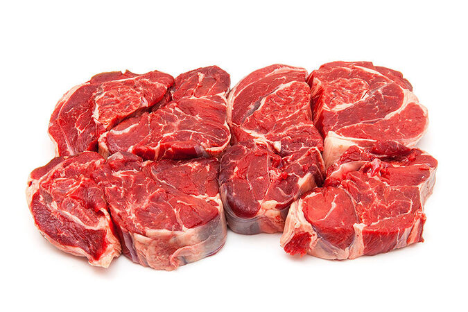
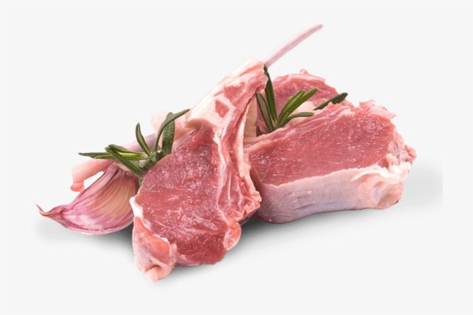

Meats

Chicken
RM9.00/kg

Beef
RM30.00/kg

Lamb
RM49.00/kg
Popular choice for a wide range of dishes, including soups, stir-fries, sandwiches, salads, and more. Chicken is also a great source of protein and can be enjoyed as a healthy option in various cuisines around the world.
Can be grilled, roasted, braised, or pan-seared, depending on the desired preparation. Beef is commonly used in dishes like burgers, stews, stir-fries, and steaks. It provides essential nutrients like protein, iron, and vitamin B12.
Can be cooked in various ways, such as grilling, roasting, stewing, or braising. Lamb is commonly used in dishes like kebabs, curries, shepherd's pie, and roasts. It provides a good source of protein and essential nutrients like iron and vitamin B12.